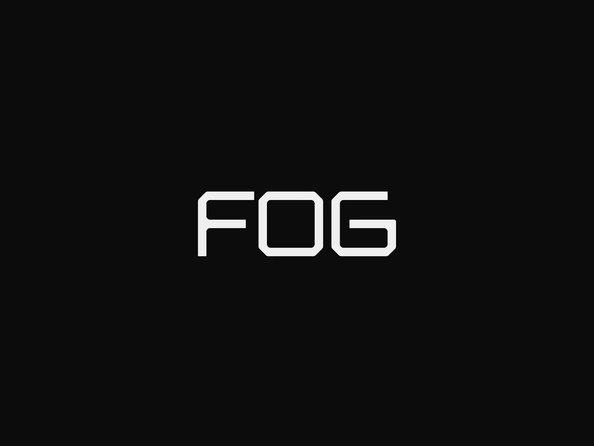

Projets
-

Déploiement Active Directory
Réseau & Infrastructure
Mise en place d'un domaine Windows Server 2022 avec DNS, DHCP, GPO et structuration AGDLP.
-

Centralisation et analyse des journaux système avec rsyslog, Filebeat, Elasticsearch, Kibana
Supervision & Logs
rsyslog + Filebeat + Elasticsearch + Kibana avec dashboards et alertes brute force SSH temps réel.
-

Intégration Linux / Active Directory
Réseau & Infrastructure
Jonction d'un serveur Ubuntu 24.04 au domaine via Kerberos et SSSD pour authentification centralisée.
-

Serveur de messagerie interne
Messagerie
Postfix (SMTP) + Dovecot (IMAP) + Roundcube webmail – envoi, réception et consultation sur domaine local.
-

HAProxy – Load Balancing
Réseau & Infrastructure
Reverse proxy avec répartition de charge Round Robin entre serveurs Apache2, supervision /stats et test de bascule.
-

Déploiement PXE – FOG Project
Déploiement
Capture et déploiement automatisé d'images Windows via boot PXE, intégré à l'infrastructure AD existante.
-

GLPI & FusionInventory
ITSM
Solution centralisée de gestion de parc, ticketing et inventaire automatisé des équipements.